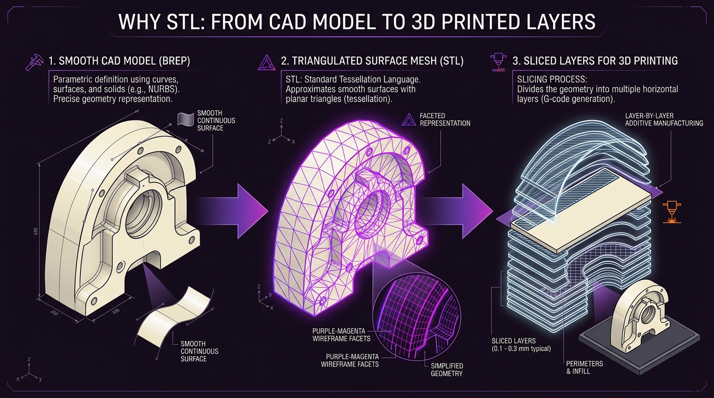
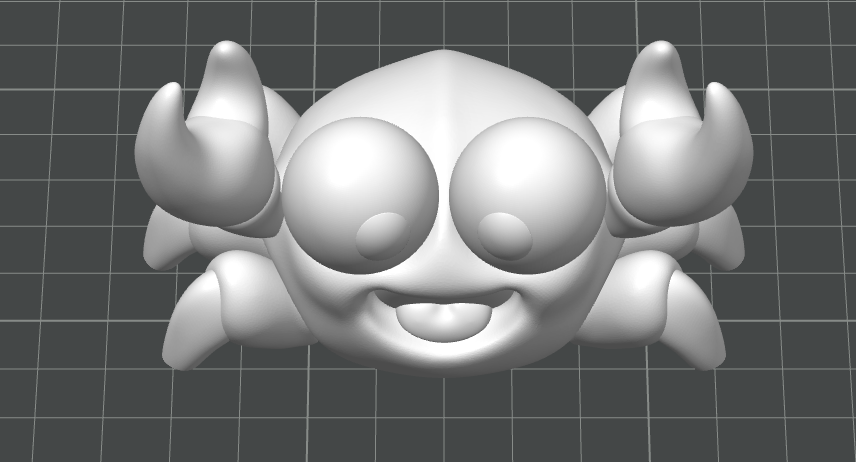
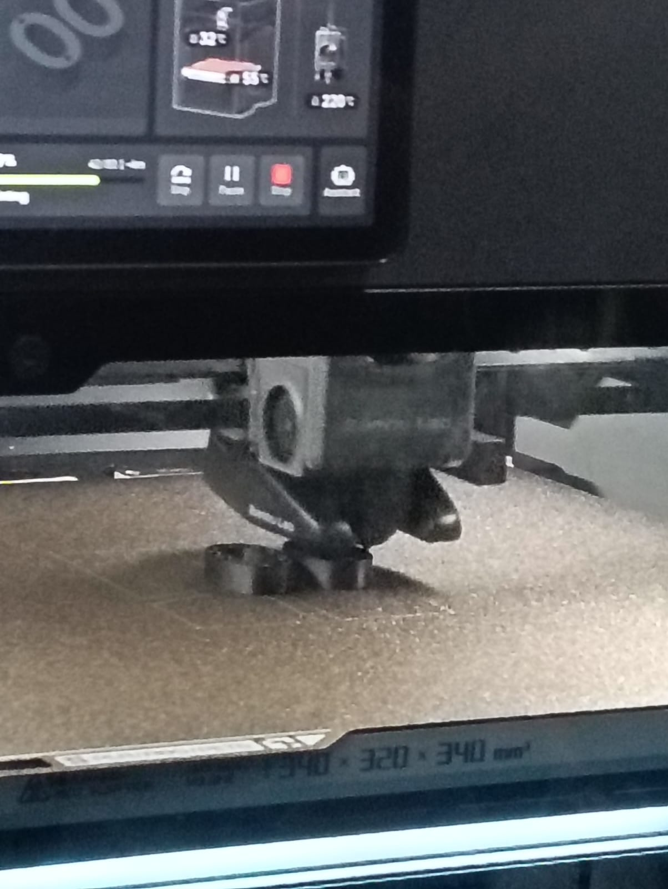
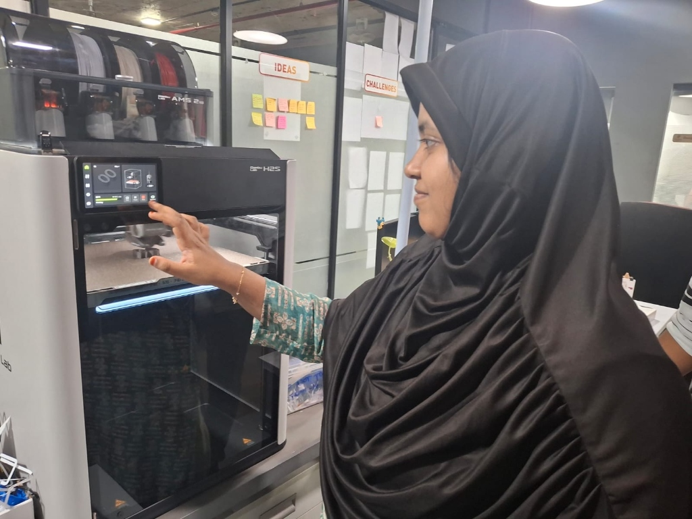

Comprehensive additive manufacturing documentation: machine kinematics, slicer calibration, triangular mesh tessellation, and articulated mechanical prototyping.
Hardware kinematics, build volume, and thermal specifications of the laboratory 3D printer.
| Parameter | Specification | Engineering Notes |
|---|---|---|
| Make | Bambu Lab | High-speed CoreXY fused deposition modeling (FDM) ecosystem |
| Model | H2S / X1-Series Prototyping Platform | Dual active-cooled direct-drive extrusion with vibration compensation |
| Build Volume | 256 mm × 256 mm × 256 mm | Spring steel flexible magnetic textured PEI build plate |
| Nozzle Size & Type | 0.4 mm (Hardened Steel Nozzle) | Maximum hotend temperature 300°C with automatic flow calibration |
| Supported Materials | PLA, PETG, TPU, ABS, ASA, PET-CF, PA-CF | Enclosed chamber with active auxiliary cooling fan |
CAM slicing engine and raw thermoplastic filament parameters.
| Category | Name / Specification | Key Parameter / Function |
|---|---|---|
| Slicer Software | Bambu Studio V1.8 (OrcaSlicer Engine) | Arachne perimeter generator, G-code path visualization & acceleration tuning |
| Material Type | PLA Basic (Polylactic Acid) | Biodegradable thermoplastic derived from renewable plant starches |
| Filament Diameter | 1.75 mm (±0.02 mm tolerance) | Standard high-precision spool filament |
| Colour & Density | Grey / Natural • 1.24 g/cm³ | Minimal thermal shrinkage, excellent interlayer bond adhesion |
Practical constraints and geometric envelope identified during laboratory fabrication.
Capable of high acceleration (up to 20,000 mm/s²) with input shaping resonance suppression. Enables print-in-place mechanical linkages with internal clearances as tight as 0.25 mm without fusing adjacent articulators.
Overhang angles exceeding 45° from the vertical axis require support structures to prevent sagging. Unsupported horizontal bridging is limited to ~50 mm. Anisotropic tensile strength is lower along the Z-axis due to interlayer interfaces.
Kinematic geometric analysis contrasting additive vs CNC subtractive fabrication.
The Crab model features multi-axis ball-and-socket links pre-assembled inside enclosed spherical joint housings that cannot be accessed by rotating endmills.
Subtractive CNC machining requires clear line-of-sight cutter paths. Undercuts and trapped hollow internal volumes cause catastrophic tool-shank collision.
FDM additive manufacturing fabricates the articulated crab as a single monolithic component without post-machining fasteners, pins, or manual sub-assembly.
Mathematical definition, triangular mesh tessellation, and planar slicing suitability.
STL represents 3D surface boundary geometry as an unstructured triangulated mesh. Each triangular facet is defined by twelve floating-point coordinates:

Geometric benchmark selection for print-in-place mechanical verification.

Selection Reason: The Articulated Crab model was chosen as an advanced geometric and mechanical torture test for our Bambu Lab workstation:
Final calibrated Bambu Studio print parameters used for manufacturing.
| Parameter | Value & Unit | Operational Justification |
|---|---|---|
| Nozzle Temperature | 220 °C | Optimal melt viscosity for high-speed PLA extrusion |
| Bed Temperature | 55 °C | Above glass transition ($T_g$) to maintain strong PEI adhesion |
| Layer Height | 0.20 mm | Balanced trade-off between vertical resolution and print speed |
| Infill Percentage | 15 % | Provides ample internal strength while conserving material |
| Infill Pattern | Gyroid | Isotropic mechanical strength with smooth continuous toolpaths |
| Wall / Shell Count | 3 Perimeters (1.2 mm) | Ensures robust joint durability during articulation cycles |
| Print Speed | 150 – 250 mm/s | High-speed outer/inner wall kinematics with active cooling |
| Supports | None (Disabled) | Print-in-place design rules eliminate need for supports |
| Adhesion Type | Textured PEI Plate (No Brim) | Reliable mechanical bed grip without post-processing cleanup |
Comparative evaluation between slicer G-code estimation and physical scale measurements.
| Evaluation Metric | Slicer Estimated Value | Physical Measured Value | Variance (Δ) | Engineering Observations |
|---|---|---|---|---|
| Total Print Time | 1 hr 24 min (84 min) | 1 hr 28 min (88 min) | +4 min (+4.7%) | Variance caused by pre-print bed leveling, nozzle wipe, and purge cycles. |
| Material Weight | 28.4 g | 28.9 g | +0.5 g (+1.7%) | Variance due to nozzle priming line, calibration purge tower, and density tolerance. |
Photographic documentation of the completed physical 3D-printed prototype.


Verified downloadable 3D geometry mesh and pre-sliced machine code.
Triangulated surface mesh STL ready for slicer orientation.
Pre-sliced toolpath file with 0.20 mm layers and thermal commands.
| Resource | Type | Description / Citation |
|---|---|---|
| Printables • McGybeer Design | 3D Model Source | Original parametric Articulated Crab model geometry with print-in-place ball hinges. |
| Bambu Studio • Bambu Lab | CAM Slicer | OrcaSlicer-based slicing engine, Arachne wall generator, and CoreXY motion planning. |
| Forge FabLab • Kumaraguru Institutions | Laboratory Facility | Bambu Lab 3D Printing workstation, PLA filament consumables, and electronic analytical scale. |